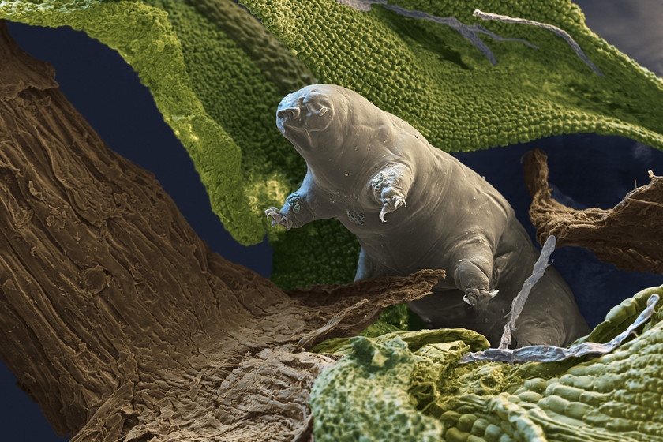

Los tardígrados (Tardigrada), llamados comúnmente osos de agua debido a su aspecto y movimientos, constituyen un filo de ecdisozoos dentro del reino animal, caracterizado por ser invertebrados, protóstomos, segmentados y microscópicos (de 500 µm de media). Además se agrupan dentro del gran grupo de los panartrópodos por presentar caracteres que sugieren que comparten un antecesor común con los artrópodos, junto a los onicóforos.

Fueron descritos por primera vez por Johann August Ephraim Goeze en 1773, el cual los denominó «osos de agua» (del alemán Kleine Wasser-Bären, literalmente ‘ositos de agua’) y hace referencia a la manera en la que caminan, similar al andar de un oso. Más tarde, el término «tardígrado» (que significa ‘de paso lento’) fue dado por Lazzaro Spallanzani en 1777, justamente debido a la lentitud de este animal.
Son organismos extremófilos (resistentes a condiciones extremas), con características únicas en el reino animal como poder sobrevivir en el vacío del espacio o soportar presiones muy altas de casi 6000 atm; pueden sobrevivir a temperaturas de -200 °C y hasta los 150 °C, a la deshidratación prolongada (pueden pasar hasta 10 años sin obtener agua) o a la radiación ionizante.